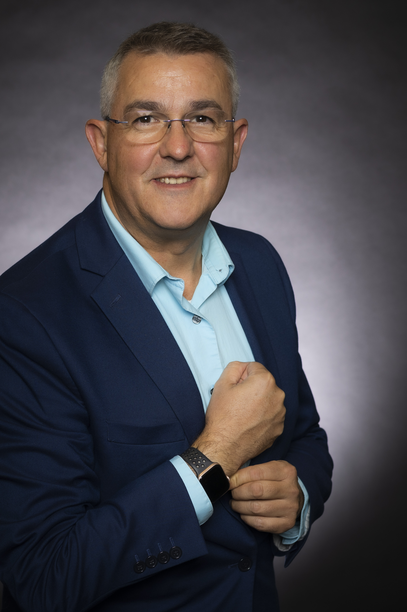

research >
teaching >
students >
music >
curriculum vitae >

Teaching philosophyMy teaching philosophy has developed as I taught computing classes ranging from high school to graduate level, from small to large undergraduate courses, with traditional audiences as well as over 800 professional programmers at industrial courses (the most recent one I held in Portland on Oct 2014). I believe that students' motivation is the most important predictor of what they will learn, so the role of the professor is to stimulate and amplify that motivation by (i) showing the value/utility of the class and (ii) convincing students that the classroom environment is conducive to success. I continuously learn about methods of teaching by working with scholars from the Center for Teaching Excellence. I believe the deepest learning occurs in an active learning environment. In CS it is easy to lecture for 75 minutes continuously, but deep learning occurs when students themselves wrestle with the content. To prevent information overload, I divided my lectures into 15-minute segments followed by an interactive activity (e.g., clicker poll, group activity, live interview with famous industry leaders). It takes more effort to prepare to teach this way, but these segments are a good reminder for me to let students wrestle with the content. I chose not to be driven by the amount of content, but by the experiences that students need to learn deeply. These techniques increased the CS427/429 class attendance from 20% in previous years to 80%. Students enjoyed the class much more and felt more comfortable. They were more engaged, talked more with each other, and asked insightful questions. Students also indicated that my classes are useful, though not easy. University courses
Summer SchoolsI am also actively engaged in teaching summer schools on parallel programming: Summer School on Multicore Programming at SPLASH'14, I2PC Summer School on Multicore Programming 2012, UPCRC Summer School on Multicore Programming 2011, 2010, 2009. Read what our participants said about their experiences. Industry CoursesI also teach intensive 1-week courses on Multicore Programming at companies (e.g., Boeing in Seattle: Fall'11, Boeing in California: Spring'12, Boeing in Seattle: Spring'12). I offer a personalized, hands-on, participatory and engaging training. Read what participants in my class said about their experience. If your company is interested to equip its software engineers to become proficient with multicore programming, contact me.
|